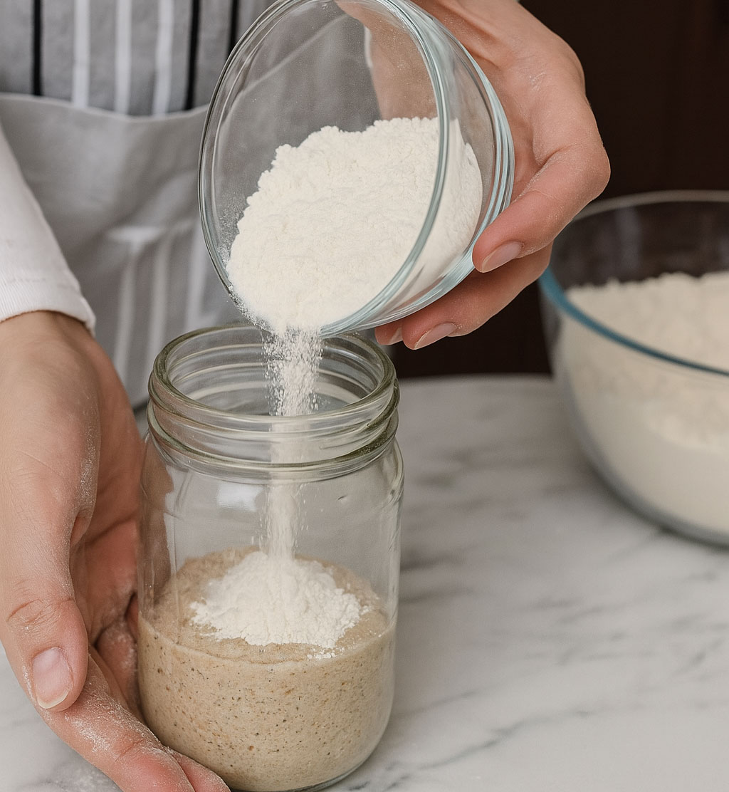
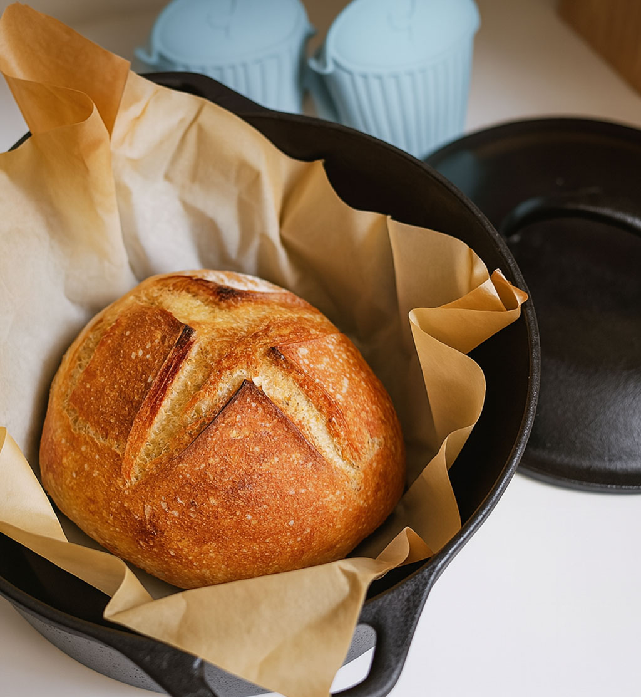
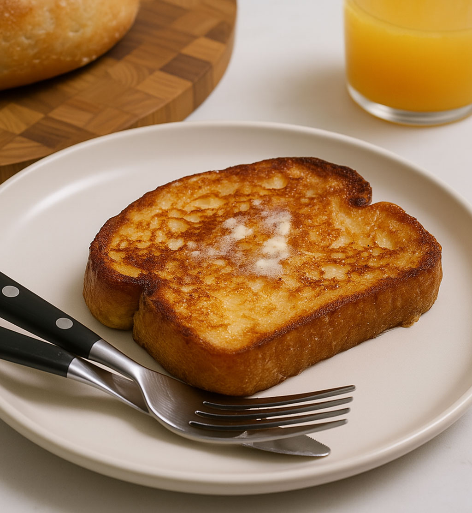
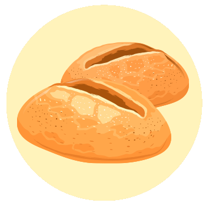

글. 편집실
참고. 국내 홈베이킹 커뮤니티 외 다수
매일 같은 속도로 돌아가는 일상에 지쳤을 때, 시간을 거스르며 천천히
무언가를 만들어가는 것만큼 좋은 위로가 또 있을까? 수많은 힐링
전문가들도 반죽을 치대고 기다리는 과정이 마음의 안정을 가져다준다고
이야기한다. 성급한 결과보다 과정 자체를 즐기며 자연의 속도에 몸을
맡기는 것이다.
사워도우(천연발효빵)는 그중에서도 누구나 쉽게 시작할 수 있는 슬로우
라이프의 시작점이다. 밀가루와 물, 그리고 기다림만 있으면 되니 거창한
준비도 필요 없다. 작은 유리병 하나로 시작하는 향긋한 도전, 지금 바로
시작해보자.

사워도우의 시작은 놀랍도록 단순하다.
통밀가루 50g, 물 50g을 섞어 뚜껑을 살짝 연 유리병에 담아두면 끝!
2~3일이 지나면 작은 기포들이 올라오기 시작하는데, 이것이 바로 공기
중의 야생 효모가 깨어나는 신호다. 매일 절반을 덜어내고 새 밀가루와
물을 더해주는 ‘먹이주기’를 반복하면, 일주일 후엔 달콤하고 시큼한
향을 풍기는 발효종이 완성된다.

발효종이 2배로 부풀어 오르면 드디어 빵을 만들 시간!
강력분 350g, 물 260g, 발효종 70g, 소금 7g을 섞어 끈적한 반죽을
만든다. 30분마다 가장자리를 접어주는 것을 4번 반복하고, 실온에서
4~6시간 발효 후 냉장고에서 하룻밤 재운다.
다음날 둥글게
성형해 2시간 더 발효시킨 뒤, 칼집을 내고 더치오븐에서 구우면
근사한 사워도우가 탄생한다.

처음엔 납작한 원반이 나올 수도, 신맛이 너무 강할 수도 있다. 하지만 그게 뭐 어떤가! 계절과 날씨, 기분에 따라 매번 다른 빵이 나오는 것이 사워도우의 매력이니까. 망친 빵은 프렌치토스트로 재탄생시키고, 다음엔 발효 시간을 조금 더 늘려보면 된다. 어느새 반죽만 만져봐도 ‘오늘은 30분 더 기다려야겠네’라는 감이 생기는 자신을 발견하게 될 것이다.

<마음채움> 상반기호에서는 초보자도 쉽게 따라할 수 있는 사워도우 8단계 레시피 카드를 드립니다. 아래 링크에서 다운받아 주방에 붙여두고 단계별로 완성해보세요!
사워도우 레시피 카드 다운받기